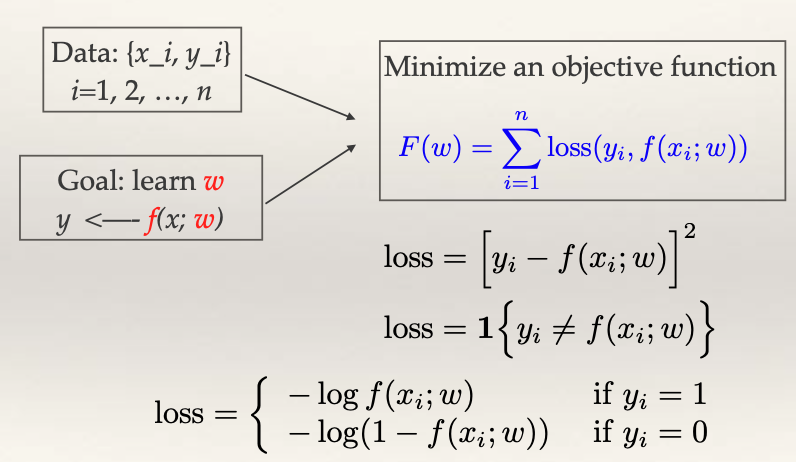

1.1.2. Challenge of supervised learning
How does supervised learning work? In other words, how can we learn to predict? Let’s break down this process step by step.
{kind=link}
Data Collection: We start with a collection of n training examples. Each x_i is a multi-dimensional vector encompassing various features, and y_i is either a numerical value for regression problems or a class label for classification problems.
Model Building: Our objective is to create a model f that encapsulates the relationship between the input features x and the corresponding output y. This model is parametrized by w. The primary goal is to learn the optimal values of w from our training data.
Objective Function: But how do we determine the optimal w? We formulate an objective function F(w) that quantifies the discrepancies between our predictions and the actual outcomes. For regression, the mean squared error (MSE) is commonly used. It quantifies the squared difference between the observed y and the prediction f(x). For classification, we can use the zero-one loss (1 if the prediction is correct, 0 otherwise) or the log loss when f(x) represents probabilities.
Optimization: The task at hand now involves finding the optimal w that minimize our objective function F(w). In simple cases, like linear regression, this minimization might have a closed-form solution. Logistic regression, a more complex case, is solved by an iterative algorithm, which is shown to converge to the optimal solution. If the loss function lacks a gradient, surrogate functions can be employed. While gradient descent may find local minima, it works out well in practice.
Up to this point, supervised learning seems straightforward. So, why is it difficult?
While we’ve approached learning as an optimization problem based on minimizing training error, our ultimate goal is to minimize error on unseen, future data – the test data. And here’s where the conundrum lies.
The primary concern in supervised learning is that the training error (how well the model fits the training data) often underestimates the test error (how well the model generalizes to new data). By solely focusing on minimizing the training error, one might achieve a near-zero error rate for the training data but find that the model performs poorly on the test data. This phenomenon is well-known as “overfitting.” Essentially, the model has become too attuned to the noise in the training data, leading to poor generalization to the test data.
Subtle Differences Between Learning and Optimization
While optimization plays a crucial role in the learning process, it is essential to distinguish between learning and optimization. Central to this is our characterization of the objective function. Rather than denoting it simply as \(F(w)\), it’s more apt to represent it as \(F_n(w)\). The importance of this distinction lies in the fact that \(F_n(w)\) is a metric we get from a random training sample of size n. As the sample size grows, the average loss \(F_n(w)/n\) converges to the expected loss over an infinite number of samples. This expected loss is the genuine objective function we aim to minimize.
The fact that \(F_n(w)\) is merely an approximation of the true objective function is pivotal. In many situations, it might not be necessary, or even advisable, to push for a stringent optimization of \(F_n(w)\). This is particularly evident when we observe that sometimes suboptimal solutions, like those yielded by gradient descent, can still deliver good results.